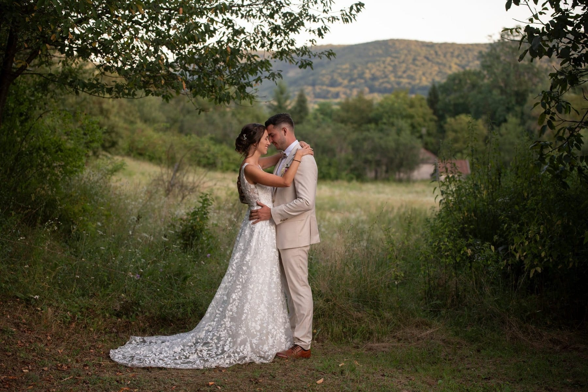
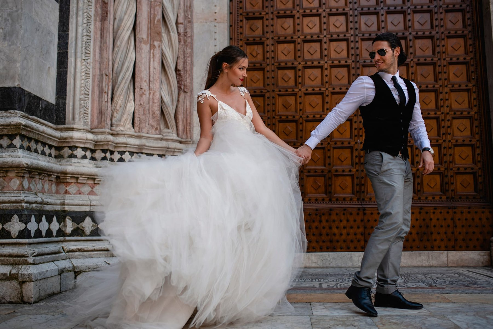
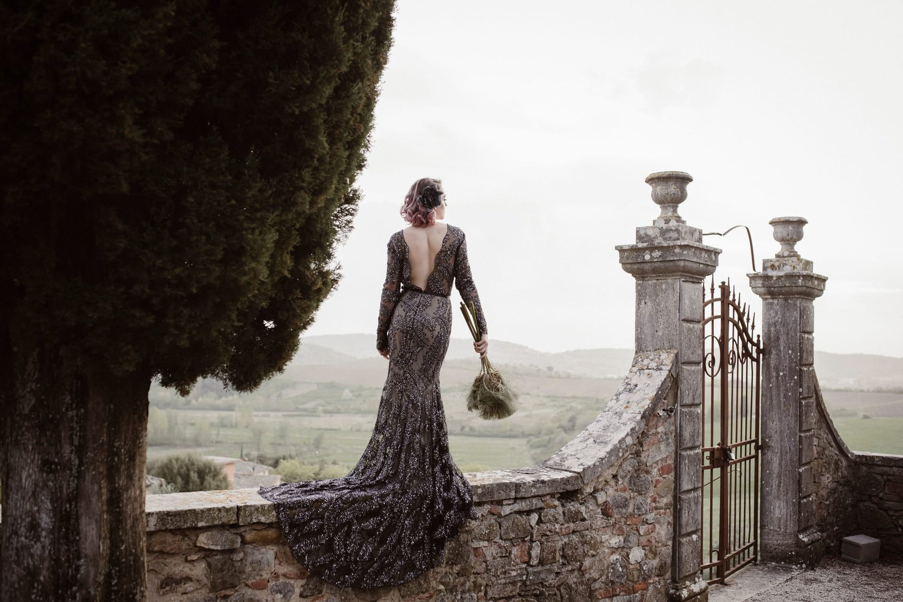
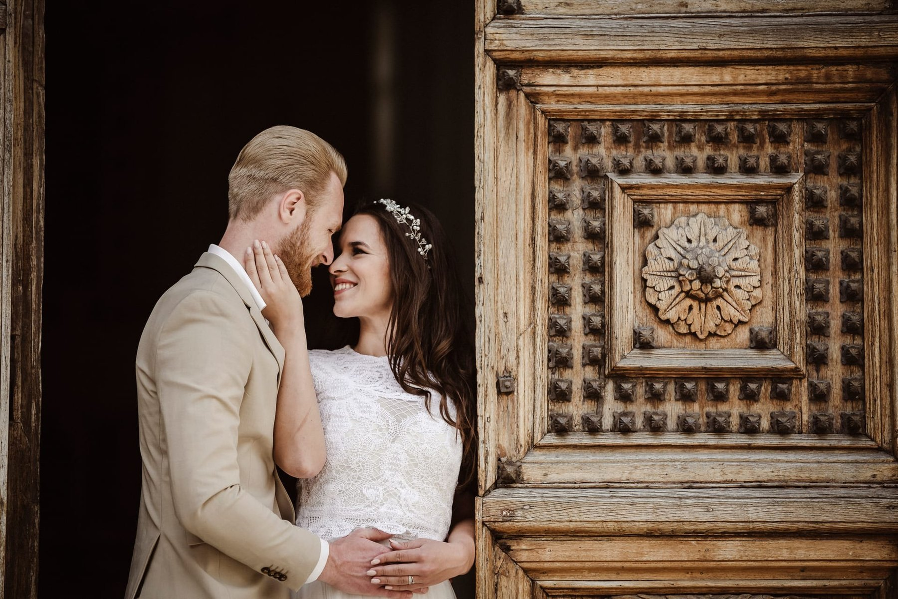
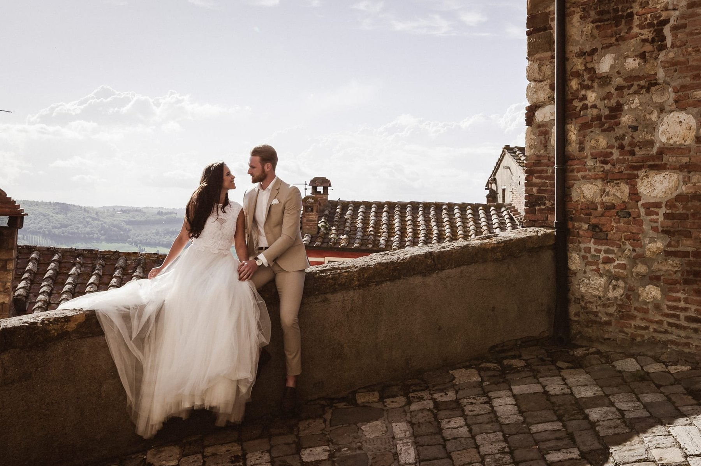
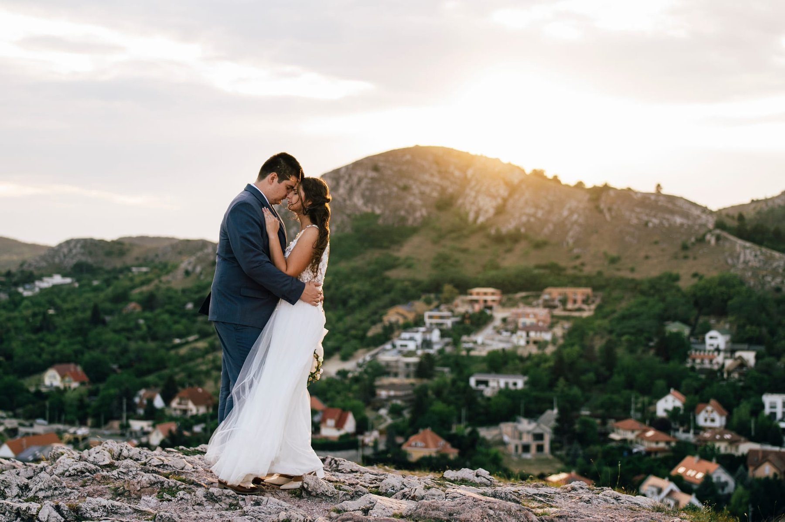
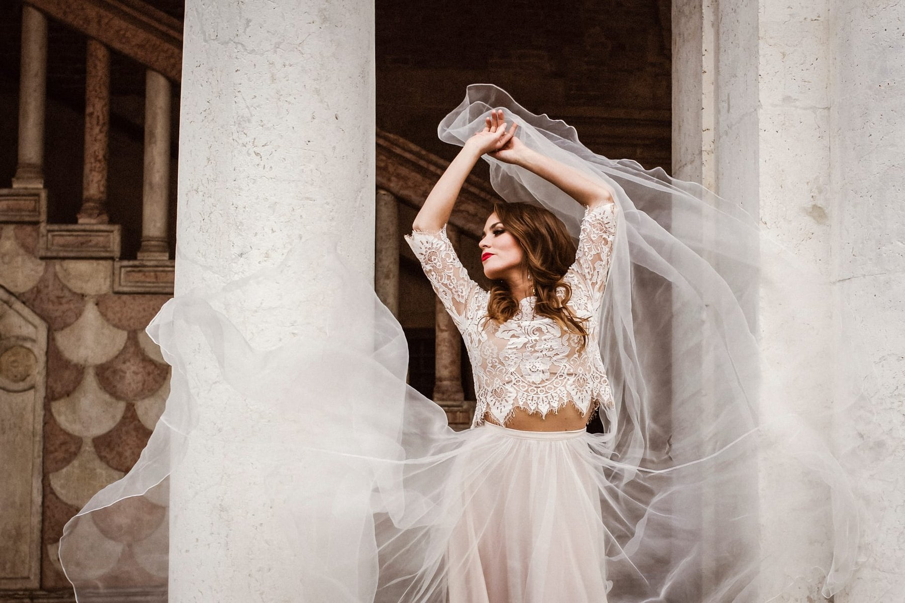
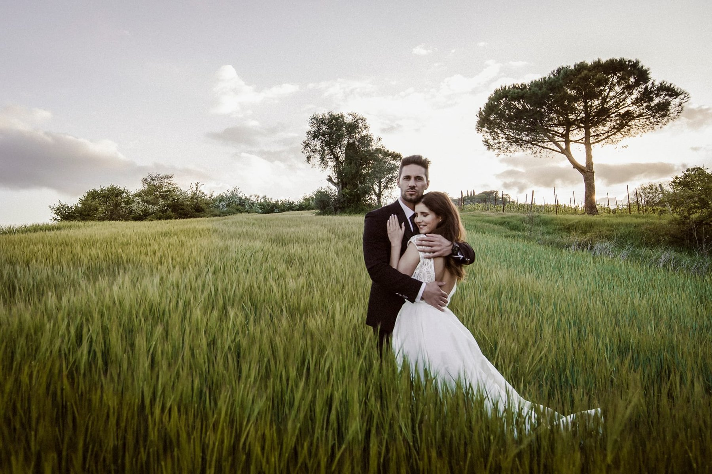

Szolgáltatások / 08
Esküvői fotózás
A nagy nap
Minden pillanat
Minden pillanat
örök emlék
Az esküvő napja az élet egyik legszebb és legizgalmasabb eseménye. Dokumentarista stílusú fotózásommal megörökítem a nagy nap minden fontos pillanatát.
Nem zavarom az eseményt, hanem a háttérben dolgozva kapom el azokat a helyzeteket, amik igazán számítanak.
Mit tartalmaz — Egyedi ajánlat
Minden esküvő egyedi, ezért az árazás is személyre szabott.
01
Egyeztetés
Személyes találkozó a részletek és elvárások megbeszélésére.
02
Egész napos fotózás
A készülődéstől a vacsora utáni táncig, végig ott vagyok.
03
300+ szerkesztett kép
Professzionálisan szerkesztett képek digitális galériában.
04
Egyedi esküvői album
Opcionálisan rendelhető, egyedi tervezésű fotóalbum.
Válogatott munkák







